Inhalt
- Einführung und Motivation
- Konzept
- Datengrundlage
- Umsetzung und Implementierung
- Ergebnisse und Ausblick
- Demo
▶ Einführung und Motivation | Konzept | Datengrundlage | Umsetzung und Implementierung | Ergebnisse und Ausblick | Demo
Überblick
▶ Einführung und Motivation | Konzept | Datengrundlage | Umsetzung und Implementierung | Ergebnisse und Ausblick | Demo
Von A nach B?
Zwischen den Standorten:
- 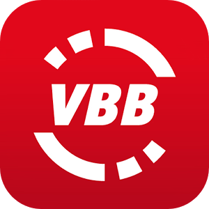

An den Standorten:
- 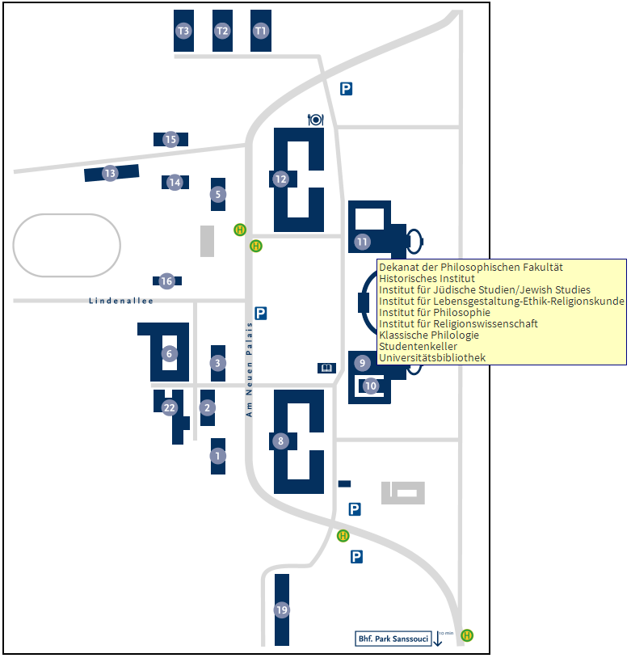
Umständlich! - Unkomfortabel! - Unpraktisch!
Lösung: Multimodaler Routenplaner vereint alle Transportmodi
Ziel: Lückenlose Haus-zu-Haus-Navigation
Einführung und Motivation |▶ Konzept | Datengrundlage | Umsetzung und Implementierung | Ergebnisse und Ausblick | Demo
Funktionsumfang
- 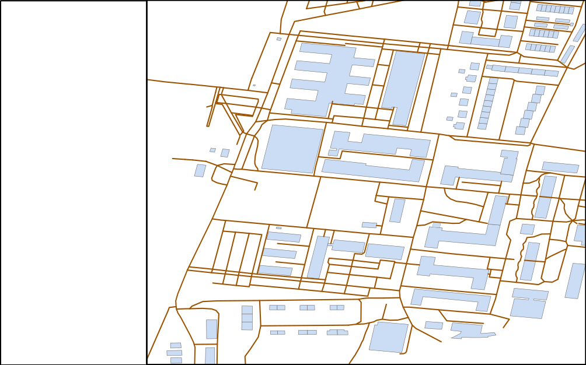
- Start- und Ziel festlegen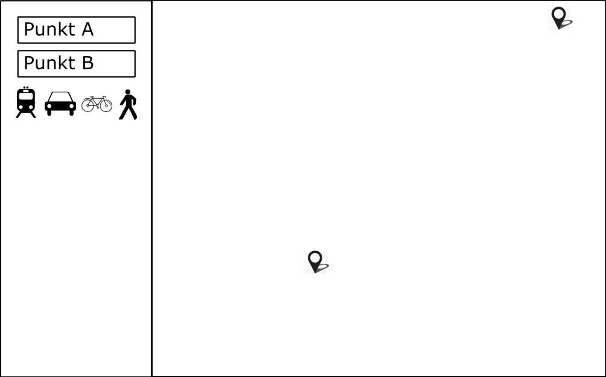
- Graph erzeugen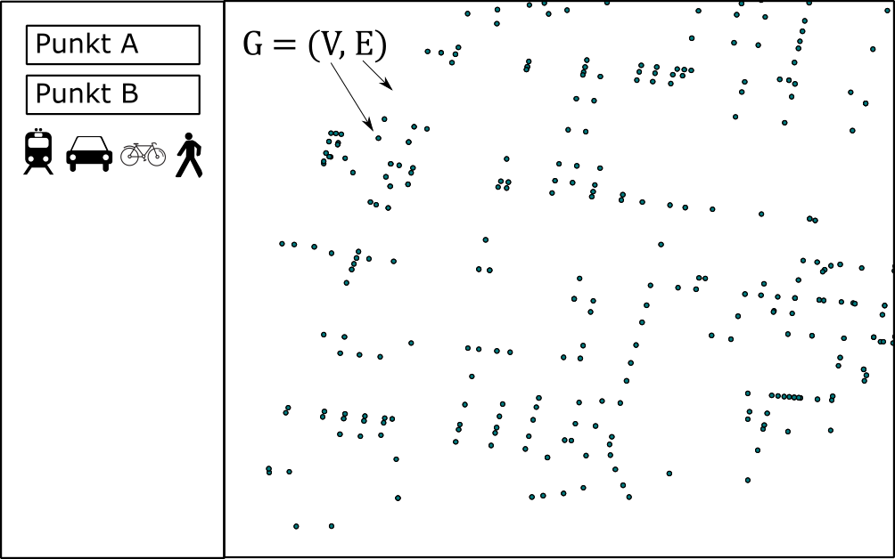
- Konfiguration durch den Nutzer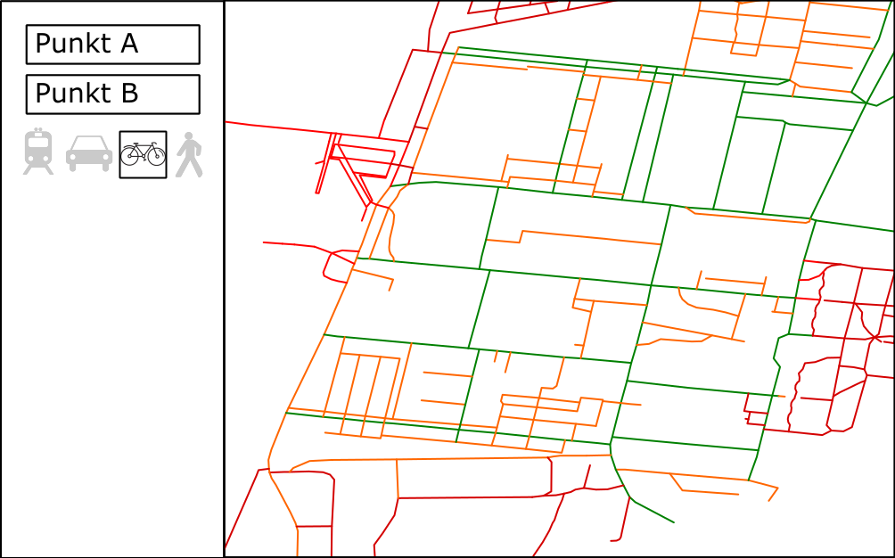
- Routing-Algorithmus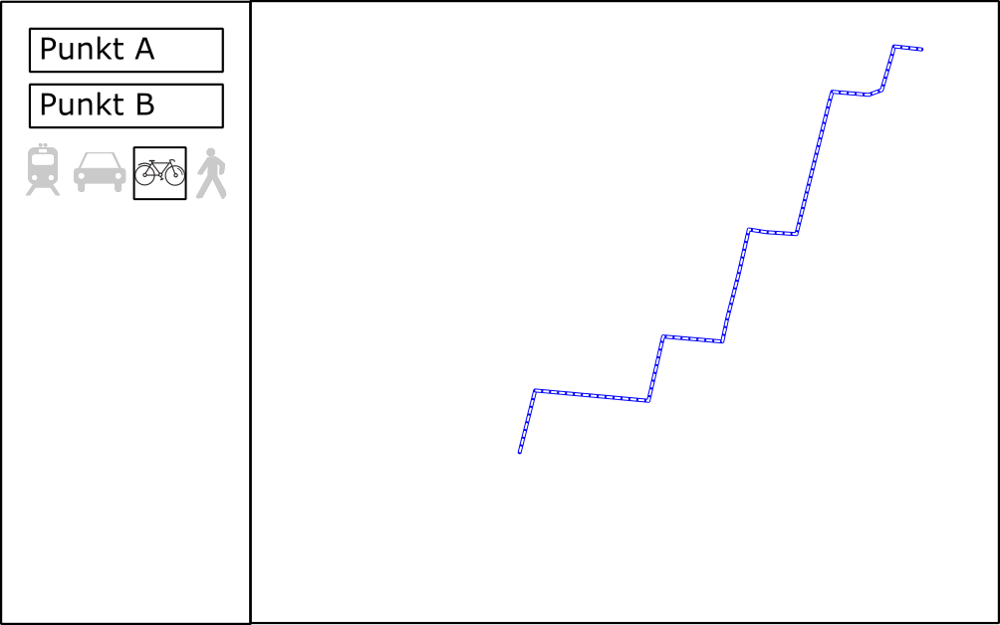
- Präsentation der Ergebnisse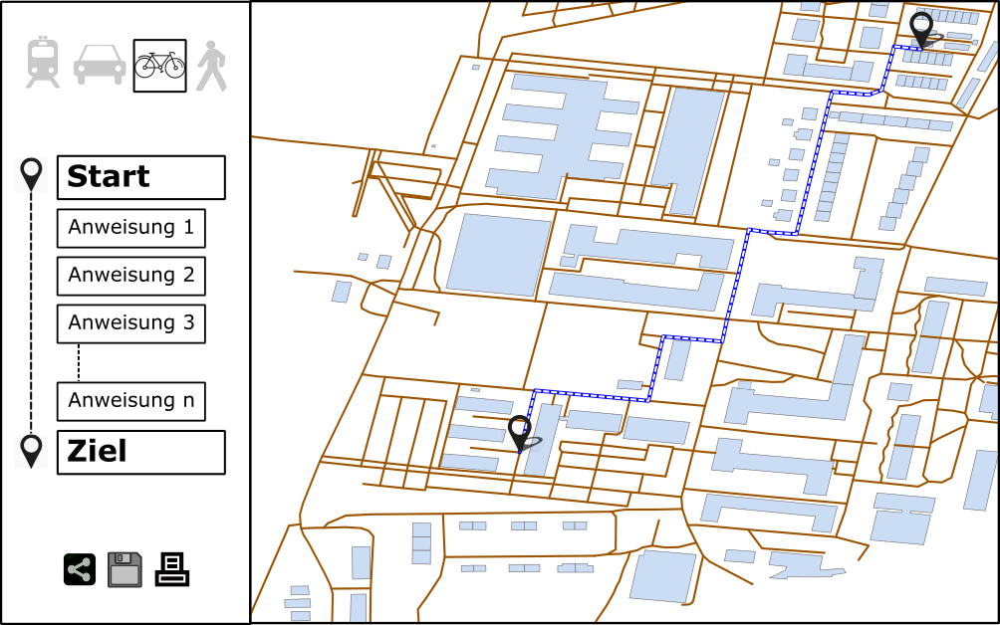
Einführung und Motivation | Konzept |▶ Datengrundlage | Umsetzung und Implementierung | Ergebnisse und Ausblick | Demo
Datenquellen
- Straßennetz
- OpenStreetMap (OSM)
- MIV, Radfahrer, Fußgänger
- ÖPNV-Netz
- General Transit Feed Specification (GTFS)
- Berlin/Brandenburg frei vom VBB verfügbar
- Höheninformationen
- DGM der Stadt Potsdam (LiDAR)
- Anpassungen für Radfahrer
Einführung und Motivation | Konzept |▶ Datengrundlage | Umsetzung und Implementierung | Ergebnisse und Ausblick | Demo
General Transit Feed Specification (GTFS)
- von Google entwickeltes Format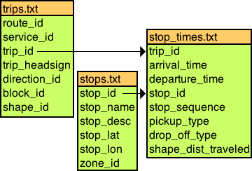
- Reihe kommaseparierter Textdateien
- Haltestellenposition, Abfahrt- & Ankunftzeiten, Linienverbindungen usw.
- statisch, Zeitraum März 2014 - Dezember 2014
- zugeschnitten auf Raum Potsdam
- regelmäßige Veröffentlichung (ca. vierteljährlich)
Einführung und Motivation | Konzept | Datengrundlage |▶ Umsetzung und Implementierung | Ergebnisse und Ausblick | Demo
OpenTripPlanner
- FOSS für multimodale Routenplanung
- modularer Aufbau
Einführung und Motivation | Konzept | Datengrundlage |▶ Umsetzung und Implementierung | Ergebnisse und Ausblick | Demo
Datenaufbereitung - OSM
- im Sinne von fitness for use
- regelmäßige Aktualisierung (parallel zu GTFS)
- kein Anspruch auf Vollständigkeit!
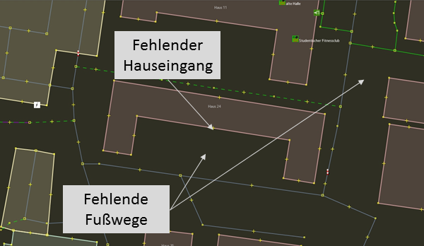
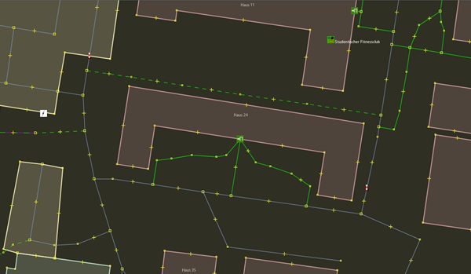
Einführung und Motivation | Konzept | Datengrundlage |▶ Umsetzung und Implementierung | Ergebnisse und Ausblick | Demo
Geocoder
- Nominatim als Geocoder für OpenStreetMap
- Attributive Vollständigkeit von OSM unzureichend ...
- ... aber auch nicht umsetzbar
- Alternative: eigener Geocoder
- XML-basierte Liste
<property name="pois">
<map>
<entry key="BABELSBERG, HAUS 1 - STUDENTENWOHNHEIM" value="52.4068 13.09953" />
<entry key="BABELSBERG, HAUS 2 - STUDENTENWOHNHEIM" value="52.40647 13.09906" />
<entry key="BABELSBERG, HAUS 3 - STUDENTENWOHNHEIM" value="52.40688 13.09823" />
<entry key="BABELSBERG, HAUS 4 - STUDENTENWOHNHEIM" value="52.40574 13.098487" />
<!-- cont... -->
</map>
</property>
Einführung und Motivation | Konzept | Datengrundlage | Umsetzung und Implementierung |▶ Ergebnisse und Ausblick | Demo
Bewertung
Umsetzung eines multimodalen Routenplaners auf Grundlage freier Daten und FOSS ist möglich ...
... mit Erfolgen:
- lückenlose Haus-zu-Haus-Navigation umgesetzt
- Einbindung eines maßgeschneiderten Geocoders
- feine Konfigurationsmöglichkeiten für Radfahrer durch Nutzung eines DGM
... und Einschränkungen:
- freie Software sehr komplex, hohe Einstiegshürde, dürftige Dokumentation, Weiterentwicklung von Community abhängig
- Datenaufbereitung notwendig, weiterhin abhängig von Anbietern
- freie Lizenzen bedeuten auch Weitergabe unter gleichen Bedingungen
Einführung und Motivation | Konzept | Datengrundlage | Umsetzung und Implementierung |▶ Ergebnisse und Ausblick | Demo
Zukunft
- Einbindung von Echtzeit-Aktualisierungen (ÖPNV, Fahrradverleih u.a.)
- Gestaltung einer speziell angepassten Nutzeroberfläche (multilingual)
- Implementierung in eine App für mobile Endgeräte (bereits möglich)
- Indoor-Navigation
- Netzwerkanalysen
- Mobile.UP
Einführung und Motivation | Konzept | Datengrundlage | Umsetzung und Implementierung | Ergebnisse und Ausblick |▶ Demo
Webanwendung
Freie Software ist keine Frage des Geldes, sondern der Freiheit. Um das Konzept zu verstehen, muss man frei im Sinne von Meinungsfreiheit erachten, nicht im Sinne von Freibier.
<Vielen Dank!>
Zusatz
General Transit Feed Specification
"route_id","agency_id","route_short_name","route_long_name","route_type"
15279_3,150,"X5","Bhf Golm - S Hauptbahnhof",3
"route_id","service_id","trip_id","trip_headsign","trip_short_name","direction_id","shape_id"
15279_3,783,27262655,"S Potsdam Hauptbahnhof","Potsdam, Golm Bhf/S Potsdam Hauptbahnhof","0",69
"trip_id","arrival_time","departure_time","stop_id","stop_sequence"
27262655,9:55:00,9:55:00,270000081101,0
27262655,9:56:00,9:56:00,270000021201,1
27262655,9:59:00,9:59:00,270000019701,2
27262655,10:02:00,10:02:00,270000049201,3
...
"stop_id","stop_code","stop_name","stop_desc","stop_lat","stop_lon","location_type","parent_station"
270000081101,"GOLU 01","Potsdam, Golm Bhf",,"52.410552000000","12.972179000000",0,900000220010
270000019701,"BSW 01","Potsdam, Baumschulenweg",,"52.404703000000","12.990345000000",0,900000230196
...
Zusatz
Geocoder
<bean id="geocoderAlternatingService" class="org.opentripplanner.geocoder.AlternatingGeocoderModified">
<!-- 1. Geocoder -->
<constructor-arg ref="geocoderManual" />
<!-- 2. Geocoder -->
<constructor-arg ref="geocoderNominatim" />
<constructor-arg value="true" />
</bean>
<bean id="geocoderManual" class="org.opentripplanner.geocoder.manual.ManualGeocoder">
<property name="pois">
<map>
<entry key="BABELSBERG, HAUS 1 - STUDENTENWOHNHEIM" value="52.4068 13.09953" />
<entry key="BABELSBERG, HAUS 2 - STUDENTENWOHNHEIM" value="52.40647 13.09906" />
<entry key="BABELSBERG, HAUS 3 - STUDENTENWOHNHEIM" value="52.40688 13.09823" />
<entry key="BABELSBERG, HAUS 4 - STUDENTENWOHNHEIM" value="52.40574 13.098487" />
<!-- cont... -->
</map>
</property>
</bean>
Zusatz
APP für mobile Endgeräte
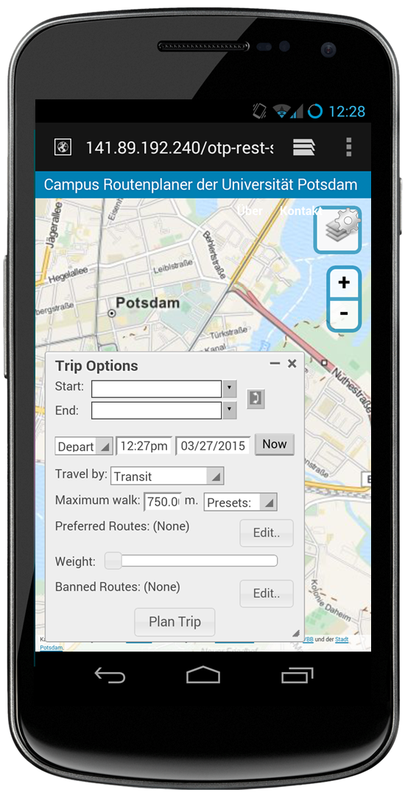
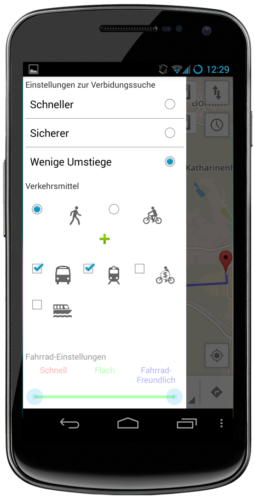
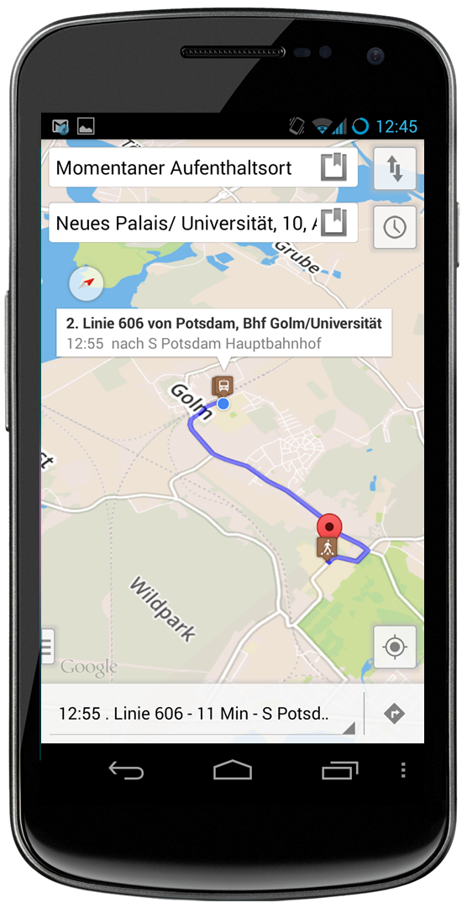
Zusatz
Indoor-Navigation
 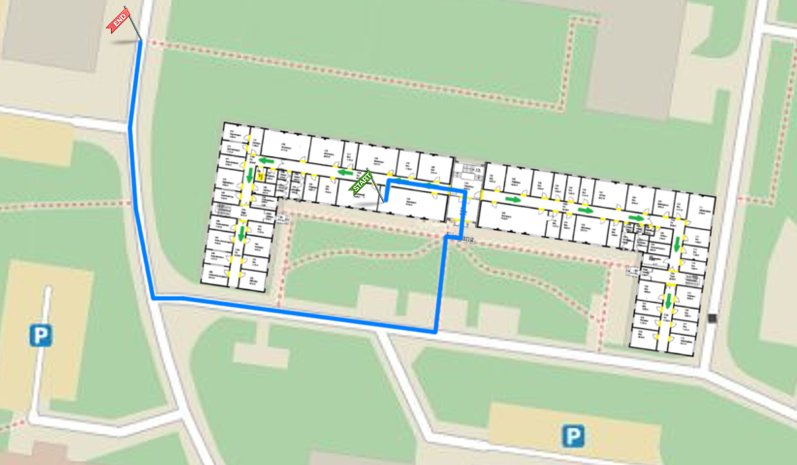
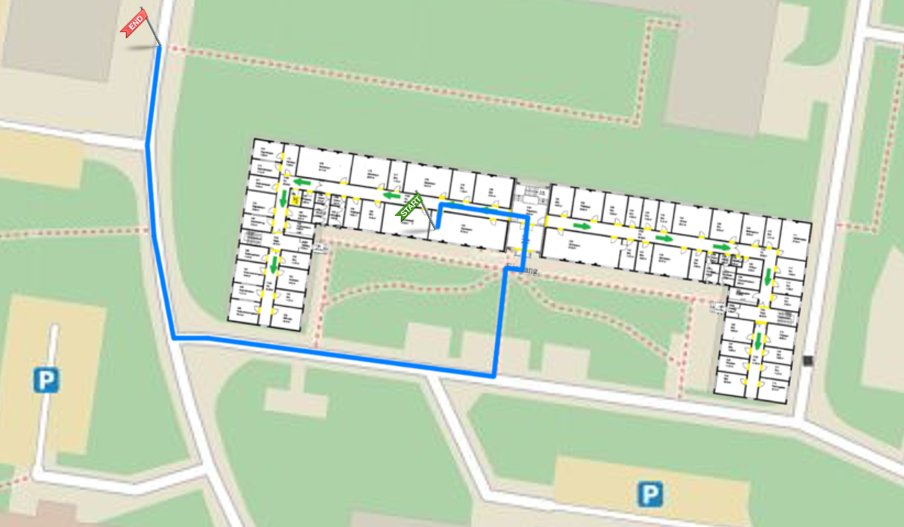